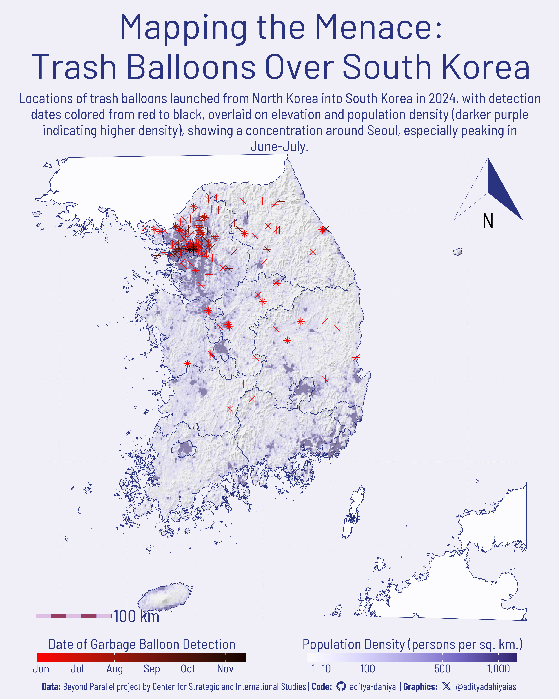

Using R packages like sf, terra, and ggplot2, this article maps South Korea’s trash balloons, revealing geospatial insights into North Korea’s 2024 campaign through advanced analysis and visualization techniques.
Geocomputation
{osmdata}
Open Street Maps
{ggmap}
{elevatr}
Raster
Population Density Raster
{ggimage}
Author
Aditya Dahiya
Published
March 31, 2025
About the Data
The data for creating a graphical map of trash balloons is sourced from the Beyond Parallel project, an initiative of the Center for Strategic and International Studies (CSIS) Korea Chair. This dataset is based on their detailed research and analysis of North Korea’s garbage-filled balloons sent into South Korea in 2024. The information was compiled from multiple sources, including satellite imagery, local media reports, and possibly government data, providing a comprehensive view of the balloon landings. The Beyond Parallel article, authored by Victor Cha and Andy Lim, offers a detailed map, while the Reuters article supplements this with additional context and CSIS data. For further details, refer to the original articles: Beyond Parallel and Reuters. Credit goes to these teams for their rigorous data collection and analysis.

Figure 1: Using data from the Beyond Parallel project by the Center for Strategic and International Studies, this map of South Korea integrates elevation (hill-shade) and population density (darker purple indicating higher density) to contextualize the locations of trash balloons launched from North Korea in 2024. The balloons are depicted as dots, with colors transitioning from red (earlier dates) to black (later dates), revealing a notable concentration around Seoul, particularly during June-July. The visualization was crafted using key R packages: sf for spatial data handling, terra for raster processing, elevatr for elevation data, and ggplot2 for plotting. Additional enhancements were made with tidyterra and ggspatial for geospatial plotting, ggtext and showtext for text formatting, and fontawesome for design elements, creating a detailed and informative graphic.
How I made this graphic?
To craft the map of South Korea’s trash balloons as shown in your code, a combination of geospatial analysis and sophisticated visualization techniques was employed, utilizing several powerful R packages. The sf package was pivotal for managing spatial data, allowing the transformation of administrative boundaries for South Korea, North Korea, and Japan—sourced via geodata and tidied with janitor—into simple features. Elevation data, fetched using elevatr, was processed with terra to generate a hill-shade effect, enhancing the map’s topographic depth. This involved computing slope and aspect with terra::terrain and applying terra::shade to simulate sunlight from a 315-degree direction at a 30-degree angle. Population density data, derived from a global raster, was cropped and masked to South Korea’s boundaries using terra::crop and terra::mask, then refined with terra::disagg to boost resolution for a seamless fit with the vector map. The balloon locations, stored as point data in an sf object, were overlaid with a color gradient tied to detection dates using ggplot2’s scale_colour_date.
The visualization was built on ggplot2, with extensions like tidyterra enabling the integration of raster layers (elevation and population density) into the plot. The ggspatial package added a scale bar and north arrow, styled to complement the map’s design, while ggnewscale managed multiple fill scales—greyscale for hill-shade and a purple gradient from paletteer for population density. Text elements were enhanced with ggtext and showtext for markdown formatting and custom fonts (e.g., Barlow from Google Fonts), and fontawesome provided social media icons in the caption. The final composition layered these elements—balloons in a red-to-black gradient, administrative boundaries, and a detailed topographic and demographic backdrop—creating an informative and visually striking map of the trash balloon phenomenon in South Korea.
Loading required libraries, data import & creating custom functions.
Code
# Plot touch-up toolslibrary(scales) # Nice Scales for ggplot2library(fontawesome) # Icons display in ggplot2library(ggtext) # Markdown text support for ggplot2library(showtext) # Display fonts in ggplot2library(colorspace) # Lighten and Darken colours# Getting geographic data library(sf) # Simple Features in Rlibrary(ggmap) # Getting raster mapslibrary(terra) # Cropping / Masking rasterslibrary(tidyterra) # Rasters with ggplot2library(osmdata) # Open Street Maps datalibrary(ggspatial) # Scales and Arrows on maps# Data Wrangling & ggplot2library(tidyverse) # All things tidy
Visualization Parameters
Code
# Font for titlesfont_add_google("Barlow",family ="title_font") # Font for the captionfont_add_google("Barlow Condensed",family ="caption_font") # Font for plot textfont_add_google("Barlow Semi Condensed",family ="body_font") showtext_auto()# Get a Korean Style Colour Palette from# https://www.schemecolor.com/korean-style.phpmypal <-c("#293380", "#953D60", "#F0EFF7","#DDBFE4", "#869FDE", "#8ABFE8")# A base Colourbg_col <- mypal[3]seecolor::print_color(bg_col)# Colour for highlighted texttext_hil <- mypal[1]seecolor::print_color(text_hil)# Colour for the texttext_col <- mypal[1]seecolor::print_color(text_col)# Colour for location pointspoint_col <- mypal[2]seecolor::print_color(point_col)# Define Base Text Sizebts <-90# Caption stuff for the plotsysfonts::font_add(family ="Font Awesome 6 Brands",regular = here::here("docs", "Font Awesome 6 Brands-Regular-400.otf"))github <-""github_username <-"aditya-dahiya"xtwitter <-""xtwitter_username <-"@adityadahiyaias"social_caption_1 <- glue::glue("<span style='font-family:\"Font Awesome 6 Brands\";'>{github};</span> <span style='color: {text_hil}'>{github_username} </span>")social_caption_2 <- glue::glue("<span style='font-family:\"Font Awesome 6 Brands\";'>{xtwitter};</span> <span style='color: {text_hil}'>{xtwitter_username}</span>")plot_caption <-paste0("**Data:** Beyond Parallel project by Center for Strategic and International Studies ", " | **Code:** ", social_caption_1, " | **Graphics:** ", social_caption_2 )rm(github, github_username, xtwitter, xtwitter_username, social_caption_1, social_caption_2)# Add text to plot-------------------------------------------------plot_title <-"Mapping the Menace:\nTrash Balloons Over South Korea"plot_subtitle <-"Locations of trash balloons launched from North Korea into South Korea in 2024, with detection dates colored from red to black, overlaid on elevation and population density (darker purple indicating higher density), showing a concentration around Seoul, especially peaking in June-July."
Get raw data, elevation data for South Korea and neighbouring countries
Code
# Administrative Boundaries for South Korea, North Korea and Japanraw_admin <- geodata::gadm(country =c("KOR", "PRK", "JPN"),level =1,path =tempdir()) |>st_as_sf() |> janitor::clean_names() |>select(country, name_1, nl_name_1) |>st_transform("EPSG:4326")# st_crs(raw_admin)# Get exclusive map of South Koreasouth_korea_map <- raw_admin |>filter(country =="South Korea")south_korea_boundary <- south_korea_map |> rmapshaper::ms_dissolve()# Trial Code to check# south_korea_boundary |> # ggplot() +# geom_sf()# Aggregate the maps of North Korea and Japan (neighbours of # South Korea) and aggregate them to remove internal divisions# Then, crop map of North Korea and Japan (neighbours) to # South Korean map's bounding boxbase_map <- raw_admin |>filter(country !="South Korea") |> rmapshaper::ms_dissolve() |>st_crop(st_bbox(south_korea_map))# Get elevation data for South Korea for a base mapsk_elevation <- elevatr::get_elev_raster(locations = south_korea_boundary,z =7) |> terra::rast() |> terra::crop(south_korea_boundary) |> terra::mask(south_korea_boundary, touches =FALSE)# Make a hill-shade relief map of South Korea elevation raster# Estimate the Slope of the terrain using terra::terrainslope1 <-terrain(sk_elevation, v ="slope", unit ="radians")# Estimate the Aspect or Orientation using terra::terrainaspect1 <-terrain(sk_elevation, v ="aspect", unit ="radians")# With a certain Sun-Angle and Sun-Direction# Calculate the hillshade effect with a certain degree of elevationsk_shade_single <-shade(slope = slope1, aspect = aspect1,angle =30,direction =315,normalize =TRUE)rm(slope1, aspect1)
Getting Population Density Data for South Korea
Code
# Population Density Raster for South Korea in latest year# Set Working Directory Temporarily to Desktop or elsewhere# Caution: Almost 167 MB of data for the entire raster file# 1990 to 2022 year Global Population Density 30 sec arc resolution# url <- paste0(# "https://zenodo.org/records/11179644/files/GlobPOP_Count_30arc_2021_I32.tiff"# )# # output_file <- paste0("GlobPOP_Count_30arc_2021_I32.tiff")# # download.file(# url = url,# destfile = output_file# )output_file <-paste0("GlobPOP_Count_30arc_2021_I32.tiff")# crop the World Population Desnity Raster to South Korea Mappop_rast_2021 <- terra::rast(output_file) |># Crop and mak population density raster to the Vector Map# Boundaries of South Korea terra::crop(south_korea_boundary) |># Increase resolution of raster to ensure better masking# with a high resolution vector data of map boundaries terra::disagg(fact =4) |># Mask with the exact area of South Korea terra::mask(south_korea_boundary, touches =FALSE)# Remove errors (i.e. negative population densities)pop_rast_2021[pop_rast_2021 <=0] <-0.01# Check population density values to make a nice colour / fill scalepop_rast_2021 |>values() |>as_tibble() |>drop_na() |>rename(value = GlobPOP_Count_30arc_2021_I32) |>ggplot(aes(x =1, y = value)) +geom_boxplot()pop_rast_2021 |>values() |>unique() |>summary()sk_shade_single |>values() |>as_tibble() |>drop_na() |>ggplot(aes(hillshade)) +geom_boxplot()
# Saving a thumbnaillibrary(magick)# Saving a thumbnail for the webpageimage_read(here::here("data_vizs", "viz_sk_trash_balloons.png")) |>image_resize(geometry ="x400") |>image_write( here::here("data_vizs", "thumbnails", "viz_sk_trash_balloons.png" ) )
Session Info
Code
# Plot touch-up toolslibrary(scales) # Nice Scales for ggplot2library(fontawesome) # Icons display in ggplot2library(ggtext) # Markdown text support for ggplot2library(showtext) # Display fonts in ggplot2library(colorspace) # Lighten and Darken colours# Getting geographic data library(sf) # Simple Features in Rlibrary(ggmap) # Getting raster mapslibrary(terra) # Cropping / Masking rasterslibrary(tidyterra) # Rasters with ggplot2library(osmdata) # Open Street Maps datalibrary(ggspatial) # Scales and Arrows on maps# Data Wrangling & ggplot2library(tidyverse) # All things tidysessioninfo::session_info()$packages |>as_tibble() |>select(package, version = loadedversion, date, source) |>arrange(package) |> janitor::clean_names(case ="title" ) |> gt::gt() |> gt::opt_interactive(use_search =TRUE ) |> gtExtras::gt_theme_espn()
Table 1: R Packages and their versions used in the creation of this page and graphics